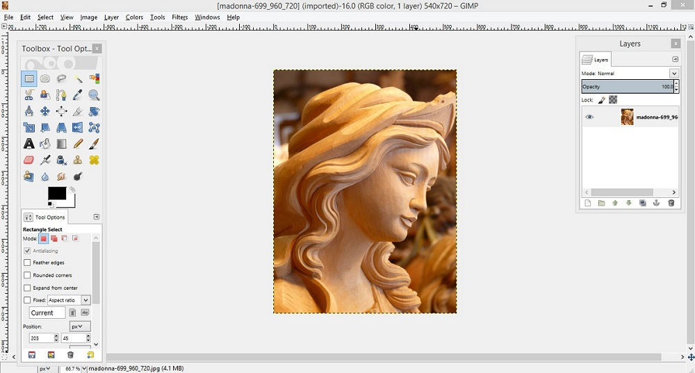
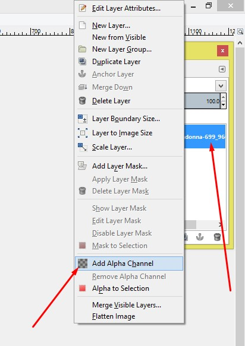
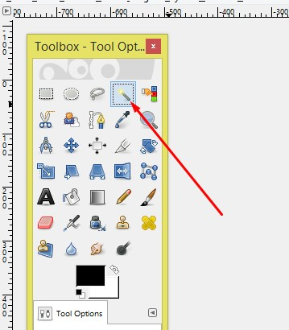
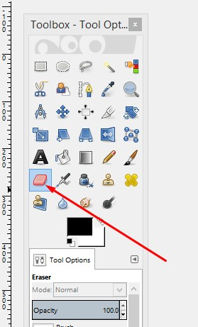
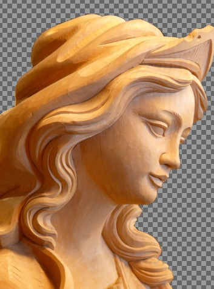

Intro GIMP
GIMP is an open source image editor that is available in the Fedora repositories. GIMP is primarily used for editing, cropping, retouching, resizing, and converting many different formats of raster images such as JPEGs and PNGs.
Fuzzy Selection Tool
The work of this tool is same as the magic wand tool of Photoshop. In GIMP, to remove background this tool works nicely.
- For removing image background, at first, you should open your image in GIMP. Go to File from the left corner of the top bar and click on the open & select the image file you like to work. You can open the image pressing Ctrl+O from your keyboard.

- Secondly, go to the layer of the main image and click right button from the mouse. A new window will appear and click on the Add Alpha Channel. If you select this channel, after removing background, you will get a transparent background.

- Then, select the Fuzzy Selection Tool from the tool bar and start simply clicking on the background of the image and hit the Delete

- Thus delete the background. During removing background, you can see some of places, it is not being deleted. In this case, select the Eraser Tool and click on those places. You will see that the background is being removed. At last, you will get a background removed image as you desired.


- However, if you wanna replace background color, just take a new layer in the layer palette, provide the color you like from the Bucket fill tool, and move the new layer down the main image layer.
OTHER TOPICS